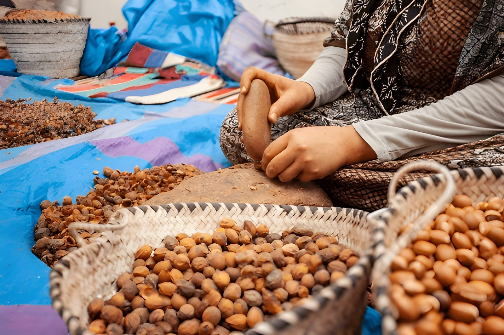

A day to remember
Explore UNESCO World Heritage medina with blue & white architecture
Day trip · Morocco
A full-day coastal trip with medina time, sea views, and a calmer pace than the busier inland city tours
Explore UNESCO World Heritage medina with blue & white architecture
Walk along historic Portuguese ramparts with stunning ocean views
Experience vibrant fishing port with traditional blue boats
Visit authentic argan oil cooperative and learn production process
Enjoy scenic coastal drive through Berber villages and argan forests
Free time for shopping, fresh seafood lunch, or beach relaxation
Your Essaouira adventure follows a carefully planned itinerary designed to showcase the best of this coastal gem. From hotel pickup to return, every moment is crafted to provide an authentic and memorable experience.
30 minutes

You leave Agadir in the morning and head north with a straightforward hotel pickup. The early start gives you enough time in Essaouira without rushing the day.
2.5 hours

The drive follows the coast and usually includes a short stop on the way. It is part of what makes this trip feel easier and more scenic than the inland routes.
45 minutes

If included on the day, the argan stop is brief and practical. It adds a local product visit before you reach Essaouira.
1.5 hours

Inside the medina, the pace slows down. You walk the main streets with the guide, get your bearings, and then have a clearer sense of where to spend your own time later.
1 hour

The ramparts and fishing port are the most distinctive visual stops. They give the trip its coastal character and are usually the main photo points of the day.
2 hours

Free time is a big part of this trip. You can eat, shop, walk by the sea, or just move around the town at your own pace before the return drive.
2.5 hours
You return to Agadir in the late afternoon, which keeps this trip full but still easier than the longer inland day tours.
Real places.
Local people.
Unforgettable memories.

Travel with a local team that knows the route and helps with the practical details. We’ll confirm the meeting point and timing before your trip.
A few useful details before your experience.
All hotels in Agadir city center and beachfront
Morning pickup: Between 8:00-8:30 AM
Comfortable walking shoes (medina and ramparts)
All vehicles are regularly maintained and insured
Usually around 2.5 to 3 hours each way, with a stop on the route depending on the day's plan.
No. Lunch is usually left open so you can choose where to eat during your free time in Essaouira.
Wear comfortable walking shoes and bring a light layer because Essaouira is often windy, even on warmer days.
You may have time to go to the beach, but this is mainly a city day trip rather than a swim-focused beach excursion.
Yes, it is generally considered one of the easier Moroccan cities for visitors, though normal travel awareness still applies.
It works year-round, but spring and autumn are usually the most comfortable balance of weather and wind.
This is one of the easier full-day trips from Agadir if you want a city visit without the intensity of Marrakech. Essaouira feels lighter, more coastal, and generally more relaxed.
The day mixes transport, a few guided moments, and free time in town. It works well for travelers who want scenery, walking, and time to eat or browse without a rushed schedule.
Your Agadir day starts here
Choose your date and we’ll confirm the details with you directly.